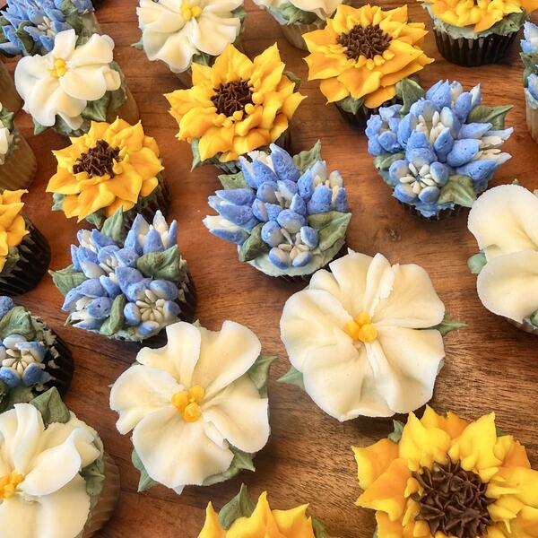
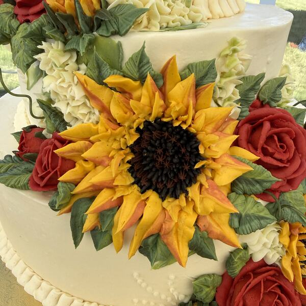

Custom Bakery Artist
Cakes and buttercream flowers, made from scratch
Nothing fake in the cake.
Welcome
Every cake is a custom piece of art, built on a canvas of delicious, scratch, all-natural ingredients.
Hastings Bake House makes wedding and celebration cakes, buttercream cupcake bouquets and coffee house treats for families across Dayton, Cincinnati and Columbus. Every flower is piped by hand, and every crumb is made from scratch.
We use only the highest quality ingredients and say “no” to seed oils and artificial dyes. You can truly taste the difference! Led by a pastry chef with over 25 years of experience, we will help guide your choices and create something delicious and memorable for you and your guests.
What We Make
-

Floral Bouquets
Hand-piped buttercream flowers on cupcakes, arranged and wrapped like a florist’s bouquet.
-

Wedding Cakes
Custom tiered cakes, cutting cakes and dessert buffets for your day.
-

Celebration Cakes
Birthdays, showers, anniversaries and every reason to gather.
-
Coffee House Treats
Scones, crumb cake, muffins and other morning favorites.


Your cake is one of the few parts of a celebration that involves all five senses.
Featured on Instagram
-
-
-

-
-

-

-


Our Promise
Nothing Fake in the Cake
No seed oils, no artificial dyes, no shortcuts. Just real butter, real fruit, pasture-raised eggs and organic ingredients wherever we can find them, baked from scratch and decorated by hand.
Why Hastings
Scratch made
Every cake, filling and buttercream flower starts from real ingredients in our kitchen.
All natural
No seed oils or artificial dyes. Colors come from the ingredients themselves.
25 years of practice
A pastry chef’s experience guides every design, from a dozen muffins to a five-tier cake.
Let’s Talk
We would love to bake for your next celebration. Reach out to start planning.
937-286-2002 hastingsbakehouse@gmail.comServing Dayton · Cincinnati · Columbus